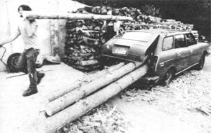
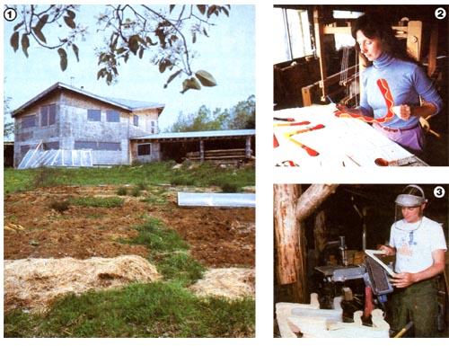
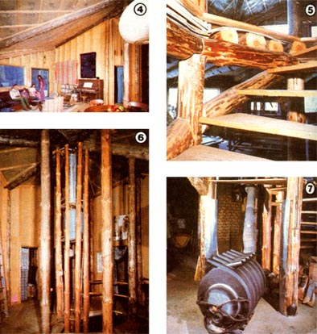
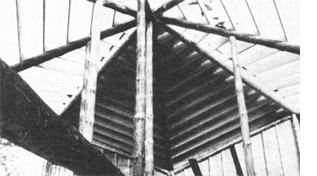

Take a peek into a lifestyle that many of us have only dreamed about.
If you've traveled much, you probably know that folks in nearly every part of the country are apt to claim, "If you don't like our weather, wait five minutes ... it'll change." But in late May of 1983, at least, no place we'd been had come closer to fitting that old saw than Vermont. Over and over, through a very pleasant day of work for a MOTHER editor/photographer team, the fickle western wind blew in surprises.
From the deck of the Larson-Darnell home in the mountains outside of South Straford, we watched clouds as they filed in rank over the southwestern horizon (so low that they seemed almost within reach) . . . dumped a dismal rain . . . and then marched off to the northwest to leave the broadest blue sky imaginable. In the valley below, the change from overcast to sunny accentuated the contrast between the rich green of second growth pine and the brilliant white of birch bark.
It was four years ago, on this same site, that Eric Darnell and Cheslye Larson towed 54 of those 60'-tall, 35-year-old pines up the mountain with an aging Subaru station wagon. Cull trees from their neighbor's timberland (which were offered at a friendly price), the straight poles now make up the load supporting frame of the couple's home and workplace. You see, 1,500 square feet of the bermed, octagonal structure serves as living space for the couple and their daughters, Giselle and Pascale . . . while the remaining 1,500 is divided: In one half Cheslye weaves, sews reproductions of Victorian clothing, and paints . . . in the rest Eric makes boomerangs, refines the design of the Free Flow Stove (which he invented and still holds the rights to), and experiments.
In fact, cottage industry is what Eric and Cheslye's story is about, and a fundamental question probably should be raised right away: Do these people concentrate upon diversified, home-based work in order to live in a quiet, beautiful rural setting . . . or do they live in this calm, wholesome environment to recuperate from the inevitable strains of creativity? Perhaps the answer to that question can be found in a day's glimpse into their lives.
On the morning we arrived, Cheslye was busy painting a batch of boomerangs to sell at a meet in Hanover, New Hampshire on the following weekend. Boomerang exhibitions and competitions are a regular part of the family's intinerary. Eric (who's been throwing since he was 12) is a member of the U.S. team, which has traveled as far as Australia to compete (successfully, by the way). And, though every top-notch "boom" thrower designs his or her own boomerangs, Eric's are widely regarded as some of the best. There are elegant seven-ply maple models, flexible plastic flyers that can practically be tied in knots, boomerangs with adjustable weighting for competition, and even a wing that can be filled with luminescent "light stick" liquid for nighttime throwing.
Boomerangs were stacked on the table saw, fresh from the blade of the band saw on the ancient Shopsmith that Eric got from his father. Between Eric's and Cheslye's work areas is a glassed partition that allows the couple to view the 180-degree panorama outside of the picture windows that ring the business level of their home. The floor there is actually below grade, the rear wall of the building being backed into the hillside and poured in 8" reinforced concrete. Two inches of extruded polystyrene foam wrap around the back of the shop and across the top and front of the attached root cellar. On the morning of MOM's visit, the sun's angle prevented direct rays from reaching very far into the workshop . . . but, as the year moves closer to the winter solstice, solar energy will enter and be stored in the insulated concrete mass of the walls and slab.
Most energy-efficient homes today are applications of one or more specific theories. In such dwellings, ideas grounded in physical phenomena are translated into wood and concrete . . . sometimes with all too little bearing on the personalities of the occupants or the environment around the dwelling. However, there is no pure theory in the Larson-Darnell home. Instead, dozens of well grounded ideas have subtly been tempered by their application. For example, Eric and Cheslye recognized that round buildings have less surface area per unit of volume than their rectilinear counterparts. Now that's an interesting point, but conventional materials don't always lend themselves to circular construction. Consequently, the couple's home is octagonal ... which is-in effect-like lopping the corners off a square to cut surface area by 9% (as compared with a circle's 11% reduction) and eliminate the all but useless 90degree angles. The owner-builders admit that creating a home of that shape presented a challenge, but they insist that it hasn't been a nightmare.
Eric did have construction skills before beginning work on their dwelling, but Cheslye was fresh to the techniques. And, though they worked side by side throughout most of the project, she was particularly eager to learn carpentry, so she took on the task of cutting and fitting the rafters for the multisloped roof. Today, she's still not sure if she's learned conventional carpentry, but says that the geometry and trigonometry of construction are now second nature to her.
Over a lunch of homemade soup and freshly baked bread, with those well-crafted rafters in full view, we discussed the structural aspects of the home. All of the major members are full diameter poles with the bark stripped off. Vertical timbers rise at the points of the octagon and in an approximately 6'-diameter circle at the focus. Round beams, cut flat on one side (it was done with a Hayden Lumber Maker and a Jonsereds 66 chain saw) to accommodate flooring, radiate from that hub and from the circular staircase that surrounds it. From the roof peak (or point), ridge and valley poles alternate to the eight points, which are spaced-again, alternately-8 feet and 12-112 feet above the floor, along the second story's plywood-sheathed walls. (During a phone conversation before we dropped by, Cheslye aptly described the $28,000 structure as a sort of "plywood crystal".)
From where we sat, we could see the home's domestic water system perched upon the central column. Eric placed the pressure tank for their well near the ceiling peak, so that they'd be able to have a supply of gravity-fed water during a power failure. From there, plumbing radiates to the bath and kitchen, with an intermediary stop at a Paloma PH 12A-DP, 90,000-Btu-demand gas water heater, for which Eric is a distributor. We also had a "visible house" view of the wall construction, since the home's finishing materials are not yet all in place. Beneath the polyethylene vapor barrier is 6 inches of fiberglass insulation, positioned between interior and exterior studs made from split 6" poles. These are placed 24 inches on center, and are offset inside and outside alternately, so there's no direct thermal path through the insulation.
By the time we'd eaten our fill (and then some!), the weather had pulled another flip flop, and-as we tried to decide whether to go ahead and shoot exterior photos or wait for yet another change-Cheslye departed to cook for two or three hours at a local restaurant. The couple's switch to cottage industry isn't complete . . . yet. Most days, Eric drives out to a wind machine manufacturing plant, Enertech Corporation, to supervise production . . . or heads off to troubleshoot a problem at the top of a remote wind plant tower. Understand, neither of these folks minds doing such work, but their goal is to be able to get along without outside jobs.
With lunch out of the way, Eric took us on a brief tour, showing us the motorcycle he plans to convert to run on electricity . . . the remnants of old Subarus--a collection he'd recently reduced drastically as a birthday present to Cheslye--that make up his spareparts supply . . . and the raised-bed organic garden, which was off to a slow start because of the unusually late spring. In front of the workshop, the footings were already in place for an attached greenhouse. It'll be dug into the earth about three feet, and will wrap around the south-facing point of the building. At the time, though, a makeshift plastic-covered enclosure housed vegetable starts that the couple were anxious to get into the ground.
Though it's well hidden in the woods north of the house, there is a power pole connected to the home's underground service entrance. The utility hookup seemed a bit out of place in the home of a family that practices so many aspects of a self-sufficient lifestyle . . . and also seemed at odds with Eric's work in the wind plant industry. Practicality is the explanation, however. An attempt to generate their own power would have absorbed tremendous resources, in both time and money. And, despite the family's very low electrical usage (they consume on the order of 200 kWh per month), the inert-gas arc welder in the shop does need a generous-if infrequent shot of current. For these people, then, electrical independence would have been an indulgence.
After Eric had completed a demonstration of boomerang throwing for the camera, Cheesy returned from town. And only a few minutes later, Giselle pedaled down the dirt road . . . coming home from the school bus stop over the mountain and trying hard to beat another squall. Pascale is still met by a bus at the main dirt road a few hundred yards away, but high school involves a bicycle trip over the mountain for the elder child. In fact, the question of transporting students to another district for upper-grade school was the main issue that Cheslye would have to deal with at the school board meeting that evening. A former teacher, she was a logical choice for the board, but her participation is actually typical of the degree to which many South Strafford residents get involved in community issues. There's a feeling that local government can work, that progress can be made, and that it's the individual's responsibility to participate.
As dusk came on, the weather cooperated one more time, permitting a glimpse of the sun just before it ducked behind the mountain. With one eye on the panorama, we talked about gyroscopic shavers . . . the differences between present and Victorian underpinnings, and what alterations must be made in both designs . . . peace . . . a dispenser that makes it possible to floss effectively with just one inch of dental floss . . . and how being beneath a vaulted ceiling in a not quite circular house makes one feel. For Eric and Cheslye, that feeling is one of being able to think and create while celebrating the environment around them. As their business name states, the dwelling is the turning point. And that probably comes about as close as we can to answering the fundamental question raised way back at the beginning of this story. After all, which came first . . . the chicken or the egg?
EDITOR'S NOTE: If you'd like to inquire about purchasing reproductions of Victorian clothing, boomerangs, a Free Flow Stove, woven goods, or any of Eric's and Cheslye's other products, you can write to them at The Turning Point, South Strafford, Vermont 05070.
|
 PHOTOS BY ERI DARNELL, CHESLYE LARSON AND MOTHER'S STAFF Four years ago, owner-builders Eric Darnell and Cheslye Larson carted 54 pine logs culled from a dense grove of 35 year-old trees up their mountain in an aging Subaru station wagon. These natural poles became the load supporting framework for the couple's 3,000-square-foot home and workshop in South Strafford, Vermont. |
 [1] The Larson-Darnell home is designed to incorporate a wraparound greenhouse on its southern point. [2] Cheslye hand paints all the custom boomerangs that they make. [3] Eric smooths the surfaces of a batch of their standard-design boomerangs. |
 [4] Progress on the family's homebuilding project is still at the stage where there's a good view of the structural detail. [5] The circular stairway that connects the two elevations has its treads ""let into"" the supporting poles. [6] By placing the pressure tank from their well high in the central column, Eric guaranteed that they'll have at least a limited supply of gravity-fed water during a power outage. [7] Their Free Flow Stove, with its wrapping of air convection, heat-exchanger tubes, is located in the workshop. |
|
 What once were mighty pine trees are now principal support timbers rising at the eight points of the octagon . . . as well as in a six-foot-diameter circle at the center focus of the LarsonDarnell dwelling. The multi sloped roof required painstaking care in the cutting and fitting of the rafters . . . a technique eagerly acquired by Cheslye during the construction process. |
|
|